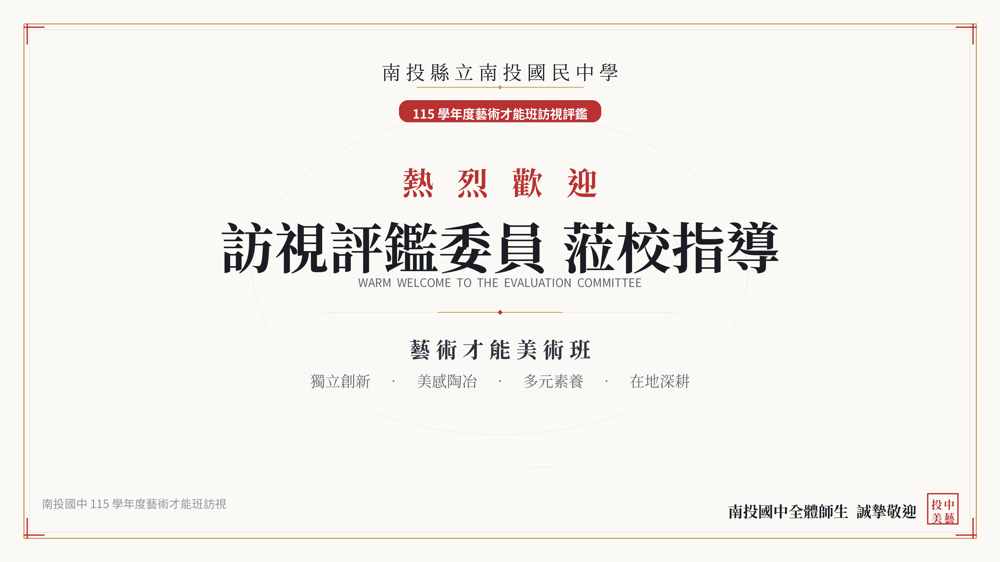

💡 評鑑委員高頻提問模擬與應答教戰守則
彙整評鑑歷年焦點，依行政、師資、課程退場、經費設備、跨域成果精準佈防，協助團隊掌握答辯主軸與具體數據佐證。
若學生入學後因適應不良、學科壓力或性向轉變，學校如何落實退場轉銜機制？
▼「落實預警、導師雙軌輔導、特推會法定審議、普通班無縫接軌。」
具體作法與佐證數據：
- 平時預警機制：導師每日審閱聯絡簿生活札記，術科專長教師在每週四組分組實作中直接掌握學習挫折，輔導室每學期固定實施心理性向評量與適應問卷。
- 三級輔導介入：初遇困難由導師及美術老師進行初級關懷；若持續適應困難，轉介輔導專任心理輔導教師晤談，並主動邀請家長到校召開親師溝通會議。
- 召開特推會審議：若學生確實有意回歸普通班，依「高級中等以下學校藝術才能班設立標準」提報學校特推會審查，尊重學生意願與法定程序，協助編入本校常態普通班，並追蹤轉銜後心理適應狀況。目前全校69人滿編穩定，異動率極低。
每週 35 節課程（部定 27 節 + 專長 8 節），如何確保學生術科精進同時兼顧學業基礎？
▼「課堂高效率吸收、四組分組實作降低課後負擔、導師課業關懷兼顧。」
具體作法與佐證數據：
- 四組分組小班教學：專長彈性節數實施小組化教學，老師在課堂內直接手把手修正，大部分創作在校內專門教室完成，避免孩子回家背負過多繁重作畫負擔。
- 部定課程不打折：國、英、數、自、社等 27 節部定課程完全依法如質如量開課，絕無挪用學科節數之情事。
- 考前彈性調配與寒暑期增能：大考前由導師協調自習與解惑；寒暑假則規劃書法與基本功進階訓練，讓學期中的學習步調更加平穩。
外聘專業教師高達 4~5 位，學校如何落實教學督導與課綱目標接軌？
▼「雙師共備制度、正式教師主導課發會、互補互利發揮綜效。」
具體作法與佐證數據：
- 納入課發小組定期共備：外聘老師（李佳芸、鄒修宏、李健榮、沈明宏）均需出席期初及期末課程研討，提交學期教學計畫與單元目標。
- 課堂正式教師協同：外聘專業教師主攻當代媒材（電繪、雷雕、產品、陶藝），校內正式編制教師（胡乃韻、林曉峰、葉素娟、林宜玟）隨時掌握班級秩序與安全規範，達到「學術底蘊＋當代實務」的最佳互補。
113-114 學年度投入 66 萬餘元主要來自競爭性計畫補助，若專案結束如何維持營運？
▼「資本門設備已全數到位、常態耗材納入本預算、家長會與地方仕紳鼎力後盾。」
具體作法與佐證數據：
- 重型資本設備已建置完成：縣府補助之高溫側開電窯、雷射雕刻機、八大教室冷氣導風等重型硬體耐用年限長達 8~10 年，未來僅需少量常規維護費。
- 爭取計畫獲評極高：「藝師藝友」、「藝起來尋美」歷年成果均獲中央與縣府特優肯定，獲獎信譽保證後續計畫核定穩定。
- 校內公務預算保底：每學年編列常態性藝才班業務費與設備維護預算，並有熱心熱忱之美術班家長後援會全力奧援。
上一輪（112年）評鑑委員曾指出「課程稍趨保守」、「欠缺外聘師資」，本屆有何徹底轉變？
▼「五大期許全面達標，展現強大校務改革動能。」
對照成效：
- 師資突破：引進5位橫跨電繪、雷雕、產品設計、陶藝的外聘名師，突破傳統水墨西畫單一範疇。
- 課程活化：七年級「藝術創作初探」、八年級「複合媒材」、九年級「立體造型」，不再以應試臨摹為主，全面強化創意發想。
- 獎金加碼：積極自籌經費，大幅調高校內美術競賽優秀獎學金。
- 畢業展年級任務分工：畢業展九年級策展主體、七八年級全面參與開幕演出與場地接待，實踐傳承美德。
如何避免美術班成為資源集中的「特權專班」？如何落實美感全校共享？
▼「圖書館美學聚落共享、公共走廊藝廊化、普通班學生共同參與藝文週。」
具體作法：
- 圖書館全面開放：將美術班優秀作品長期常態展示於新落成之溫馨圖書館，全校近千名師生均在相同美感場域中閱讀與學習。
- 校園公共藝術與彩繪：美術班師生帶領普通班同學共同執行校園洗手台、樓梯轉角的美感彩繪，讓美育成為全校生活日常。
- 校慶美展全校徵件：美術班教師主動協助指導普通班對繪畫有興趣之學生，擴大得獎廣度。
面對 AI 繪圖與數位科技浪潮，學校美術班教師如何應對與自我充實？
▼「手繪基本功無可取代，數位工具成為激發創意的加速器。」
具體作法：
- 教師研習引進 Canva、數位繪圖與生成美學討論，引導學生思考「原創美學感知」的本質。
- 電腦教室配置專業繪圖板與雷雕軟體，九年級學生能自行將手繪線稿轉為數位向量檔，進行雷射切割立體模型組裝。
面對少子化與鄰近學校競爭，南投國中美術班未來的招生利基與策略為何？
▼「優質升學口碑、八大專業工坊全南投最齊全、深厚在地家長信賴。」
具體作法：
- 連續多年超過五成錄取明星公立高中美術班與高職設計科，升學榜單就是最佳品牌。
- 主動走入國小端辦理「國小高年級美感試探營」與國小美術班聯展，深耕基層美術種子。
- 每年畢業美展廣邀南投各國小校長與親師生蒞臨，建立無縫銜接的在地招生生態圈。
🗺️ 評鑑訪視當日時程表、走訪動線與司儀主持詞
掌握訪視當日每分每秒節奏，明列走訪 8 大工坊重點解說詞與場地檢核表，展現南投國中最細膩專業的接待水準。
⏱️ 當日訪視標準時間流程表
10 分鐘
委員蒞校 ‧ 簽到與相見歡
校長室 / 貴賓簡報室行政團隊（四處室主任、特教組長）門口迎賓，引導簽到、配掛貴賓識別證、致贈受評資料袋與評鑑手冊。
10 分鐘
開幕致詞與介紹人員
會議簡報室劉校長松彥致歡迎詞、介紹輔導室與課發團隊、介紹校外諮詢教授（黃嘉勝教授、陳一凡教授）、主席致詞。
30 分鐘
校務評鑑簡報：「孕育一棵藝術大樹」
大螢幕會議室由校長 劉松彥 親自主講，依土壤（行政）、陽光水（師資）、枝幹（課程）、養分（設備）、果實（成果）及年輪淬鍊進行 16 頁精華報告。
60 分鐘
實地環境設備踏查 ‧ 觀課與作品參觀
美學聚落 ＆ 八大創作基地由特教組長與導師引導委員實地踏查專業教室，見證學生現場分組上課與創作實況（詳見下方走訪動線指引）。
40 分鐘
書面佐證資料檢閱 ＆ 分組親師生座談
圖書館多功能區 / 會議室分組檢閱六大維度檔案卷夾；委員抽訪教師代表、學生代表、家長代表進行交流晤談。
40 分鐘
綜合座談 ‧ 意見回饋與指導
貴賓會議室各訪視委員逐一講評、提出具體建言；校長與主任綜合回應；全體合影留念、圓滿閉幕。
🚶 實地走訪動線規劃與現場解說重點
迎賓大廳 ＆ 電視牆展區
解說重點：展示橫式迎賓海報與學生獲獎電子畫冊，展現全校師生誠摯歡迎與近年六大類美展霸榜戰績。

圖書館 ‧ 全校美學聚落
解說重點：展示美術班作品如何走入公共空間，挑高自然採光與常設藝廊，呈現「境教之美、全校共享」之核心價值。
水墨書法 ＆ 素描水彩教室
解說重點：觀摩七、八年級分組教學，學生現場執筆揮毫與石膏靜物素描，展現穩固厚實的學院派手繪基本功。
立體工坊 ＆ 陶藝電窯室
解說重點：介紹縣府專案補助之高溫側開電窯安全控溫系統、拉胚機設備，展示學生陶藝與翻糖食藝跨域作品。
雷雕多媒體電腦教室
解說重點：學生現場示範繪圖軟體建模與雷射切割機操作，解說「藝師藝友木工文創」產學實作進階成果。
專業展覽廳（佈展教學）
解說重點：介紹專業調光投射軌道、九年級學生自主策展佈局，展現「佈展即教學」之實踐成果。
📋 訪視接待工作檢核清單 (Checklist)
📝 評鑑委員現場提問與建議即時紀錄表
供現場特教組、輔導室或行政同仁即時打字登記委員提問與建議，即時生成追蹤改善方案，支援一鍵列印與匯出！
| 委員 / 維度 | 委員提問與建議意見 | 學校現場回應要點 | 後續追蹤處室與行動 | 狀態 / 操作 |
|---|